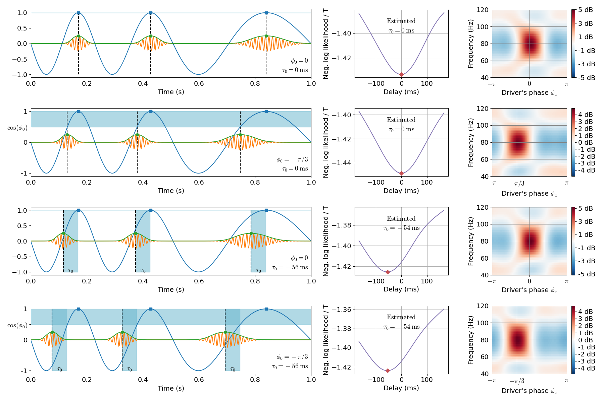

Phase shift and temporal delay in PAC¶
This example disantangles the two distinct notions of phase shift and temporal delay in phase-amplitude coupling. The phase shift is the phase of the slow oscillation which corresponds to the maximum amplitude of the fast oscillation. The temporal delay is the delay between the two coupled components. The two notions would be identical should the driver be a perfect stationary sinusoid.
(1st line) When both are equal to zero, the high frequency bursts happen in the driver’s peaks.
(2nd line) When τ = 0 and φ = 0, the bursts are shifted in time with respect to the driver’s peaks, and this shift varies depending on the instantaneous frequency of the driver.
(3rd line) When τ = 0 and φ = 0, the bursts are shifted in time with respect to the driver’s peaks, and this shift is constant over the signal. In this case, note how the driver’s phase corresponding to the bursts varies depending on the instantaneous frequency of the driver.
(4th line) τ and φ can also be both non-zero.
The temporal delay is estimated maximizing the likelihood on DAR models. The phase shift is extracted from a DAR model fitted with the optimal temporal delay.
References¶
Dupré la Tour et al. (2017). Non-linear Auto-Regressive Models for Cross-Frequency Coupling in Neural Time Series. bioRxiv, 159731.
Out:
[ ] 0% | 0.00 sec | delays
[ ] 1% | 0.09 sec | delays
[ ] 1% | 0.19 sec | delays
[ ] 2% | 0.30 sec | delays
[ ] 2% | 0.41 sec | delays
[. ] 3% | 0.50 sec | delays
[. ] 4% | 0.58 sec | delays
[. ] 4% | 0.68 sec | delays
[. ] 5% | 0.81 sec | delays
[.. ] 5% | 0.92 sec | delays
[.. ] 6% | 1.04 sec | delays
[.. ] 7% | 1.20 sec | delays
[.. ] 7% | 1.37 sec | delays
[... ] 8% | 1.50 sec | delays
[... ] 8% | 1.64 sec | delays
[... ] 9% | 1.80 sec | delays
[... ] 10% | 1.98 sec | delays
[.... ] 10% | 2.10 sec | delays
[.... ] 11% | 2.19 sec | delays
[.... ] 11% | 2.29 sec | delays
[.... ] 12% | 2.39 sec | delays
[..... ] 13% | 2.49 sec | delays
[..... ] 13% | 2.60 sec | delays
[..... ] 14% | 2.68 sec | delays
[..... ] 14% | 2.76 sec | delays
[..... ] 15% | 2.84 sec | delays
[...... ] 16% | 2.92 sec | delays
[...... ] 16% | 2.99 sec | delays
[...... ] 17% | 3.07 sec | delays
[...... ] 17% | 3.15 sec | delays
[....... ] 18% | 3.23 sec | delays
[....... ] 19% | 3.32 sec | delays
[....... ] 19% | 3.40 sec | delays
[....... ] 20% | 3.48 sec | delays
[........ ] 20% | 3.55 sec | delays
[........ ] 21% | 3.63 sec | delays
[........ ] 22% | 3.72 sec | delays
[........ ] 22% | 3.80 sec | delays
[......... ] 23% | 3.88 sec | delays
[......... ] 23% | 3.96 sec | delays
[......... ] 24% | 4.07 sec | delays
[......... ] 25% | 4.16 sec | delays
[.......... ] 25% | 4.26 sec | delays
[.......... ] 26% | 4.37 sec | delays
[.......... ] 26% | 4.48 sec | delays
[.......... ] 27% | 4.59 sec | delays
[........... ] 28% | 4.69 sec | delays
[........... ] 28% | 4.82 sec | delays
[........... ] 29% | 4.94 sec | delays
[........... ] 29% | 5.03 sec | delays
[........... ] 30% | 5.12 sec | delays
[............ ] 31% | 5.20 sec | delays
[............ ] 31% | 5.29 sec | delays
[............ ] 32% | 5.38 sec | delays
[............ ] 32% | 5.48 sec | delays
[............. ] 33% | 5.58 sec | delays
[............. ] 34% | 5.66 sec | delays
[............. ] 34% | 5.73 sec | delays
[............. ] 35% | 5.85 sec | delays
[.............. ] 35% | 6.01 sec | delays
[.............. ] 36% | 6.10 sec | delays
[.............. ] 37% | 6.18 sec | delays
[.............. ] 37% | 6.28 sec | delays
[............... ] 38% | 6.37 sec | delays
[............... ] 38% | 6.50 sec | delays
[............... ] 39% | 6.61 sec | delays
[............... ] 40% | 6.69 sec | delays
[................ ] 40% | 6.77 sec | delays
[................ ] 41% | 6.85 sec | delays
[................ ] 41% | 6.93 sec | delays
[................ ] 42% | 7.02 sec | delays
[................. ] 43% | 7.10 sec | delays
[................. ] 43% | 7.18 sec | delays
[................. ] 44% | 7.25 sec | delays
[................. ] 44% | 7.33 sec | delays
[................. ] 45% | 7.41 sec | delays
[.................. ] 46% | 7.49 sec | delays
[.................. ] 46% | 7.57 sec | delays
[.................. ] 47% | 7.65 sec | delays
[.................. ] 47% | 7.72 sec | delays
[................... ] 48% | 7.82 sec | delays
[................... ] 49% | 7.90 sec | delays
[................... ] 49% | 7.98 sec | delays
[................... ] 50% | 8.06 sec | delays
[.................... ] 50% | 8.14 sec | delays
[.................... ] 51% | 8.22 sec | delays
[.................... ] 51% | 8.29 sec | delays
[.................... ] 52% | 8.37 sec | delays
[..................... ] 53% | 8.45 sec | delays
[..................... ] 53% | 8.55 sec | delays
[..................... ] 54% | 8.62 sec | delays
[..................... ] 54% | 8.70 sec | delays
[...................... ] 55% | 8.78 sec | delays
[...................... ] 56% | 8.85 sec | delays
[...................... ] 56% | 8.94 sec | delays
[...................... ] 57% | 9.01 sec | delays
[...................... ] 57% | 9.09 sec | delays
[....................... ] 58% | 9.17 sec | delays
[....................... ] 59% | 9.24 sec | delays
[....................... ] 59% | 9.34 sec | delays
[....................... ] 60% | 9.42 sec | delays
[........................ ] 60% | 9.50 sec | delays
[........................ ] 61% | 9.57 sec | delays
[........................ ] 62% | 9.65 sec | delays
[........................ ] 62% | 9.73 sec | delays
[......................... ] 63% | 9.81 sec | delays
[......................... ] 63% | 9.88 sec | delays
[......................... ] 64% | 9.97 sec | delays
[......................... ] 65% | 10.06 sec | delays
[.......................... ] 65% | 10.17 sec | delays
[.......................... ] 66% | 10.25 sec | delays
[.......................... ] 66% | 10.34 sec | delays
[.......................... ] 67% | 10.43 sec | delays
[........................... ] 68% | 10.52 sec | delays
[........................... ] 68% | 10.60 sec | delays
[........................... ] 69% | 10.68 sec | delays
[........................... ] 69% | 10.78 sec | delays
[............................ ] 70% | 10.88 sec | delays
[............................ ] 71% | 11.00 sec | delays
[............................ ] 71% | 11.10 sec | delays
[............................ ] 72% | 11.24 sec | delays
[............................ ] 72% | 11.35 sec | delays
[............................. ] 73% | 11.45 sec | delays
[............................. ] 74% | 11.57 sec | delays
[............................. ] 74% | 11.66 sec | delays
[............................. ] 75% | 11.75 sec | delays
[.............................. ] 75% | 11.84 sec | delays
[.............................. ] 76% | 11.97 sec | delays
[.............................. ] 77% | 12.08 sec | delays
[.............................. ] 77% | 12.17 sec | delays
[............................... ] 78% | 12.27 sec | delays
[............................... ] 78% | 12.36 sec | delays
[............................... ] 79% | 12.45 sec | delays
[............................... ] 80% | 12.53 sec | delays
[................................ ] 80% | 12.61 sec | delays
[................................ ] 81% | 12.69 sec | delays
[................................ ] 81% | 12.78 sec | delays
[................................ ] 82% | 12.87 sec | delays
[................................. ] 83% | 12.95 sec | delays
[................................. ] 83% | 13.10 sec | delays
[................................. ] 84% | 13.22 sec | delays
[................................. ] 84% | 13.31 sec | delays
[.................................. ] 85% | 13.38 sec | delays
[.................................. ] 86% | 13.47 sec | delays
[.................................. ] 86% | 13.58 sec | delays
[.................................. ] 87% | 13.69 sec | delays
[.................................. ] 87% | 13.81 sec | delays
[................................... ] 88% | 13.90 sec | delays
[................................... ] 89% | 13.98 sec | delays
[................................... ] 89% | 14.06 sec | delays
[................................... ] 90% | 14.16 sec | delays
[.................................... ] 90% | 14.24 sec | delays
[.................................... ] 91% | 14.32 sec | delays
[.................................... ] 92% | 14.39 sec | delays
[.................................... ] 92% | 14.49 sec | delays
[..................................... ] 93% | 14.58 sec | delays
[..................................... ] 93% | 14.66 sec | delays
[..................................... ] 94% | 14.74 sec | delays
[..................................... ] 95% | 14.82 sec | delays
[...................................... ] 95% | 14.92 sec | delays
[...................................... ] 96% | 14.99 sec | delays
[...................................... ] 96% | 15.07 sec | delays
[...................................... ] 97% | 15.15 sec | delays
[....................................... ] 98% | 15.23 sec | delays
[....................................... ] 98% | 15.32 sec | delays
[....................................... ] 99% | 15.39 sec | delays
[....................................... ] 99% | 15.48 sec | delays
[........................................] 100% | 15.55 sec | delays
[ ] 0% | 0.00 sec | delays
[ ] 1% | 0.09 sec | delays
[ ] 1% | 0.18 sec | delays
[ ] 2% | 0.28 sec | delays
[ ] 2% | 0.36 sec | delays
[. ] 3% | 0.45 sec | delays
[. ] 4% | 0.53 sec | delays
[. ] 4% | 0.62 sec | delays
[. ] 5% | 0.71 sec | delays
[.. ] 5% | 0.80 sec | delays
[.. ] 6% | 0.90 sec | delays
[.. ] 7% | 1.03 sec | delays
[.. ] 7% | 1.12 sec | delays
[... ] 8% | 1.21 sec | delays
[... ] 8% | 1.29 sec | delays
[... ] 9% | 1.38 sec | delays
[... ] 10% | 1.46 sec | delays
[.... ] 10% | 1.55 sec | delays
[.... ] 11% | 1.65 sec | delays
[.... ] 11% | 1.75 sec | delays
[.... ] 12% | 1.83 sec | delays
[..... ] 13% | 1.92 sec | delays
[..... ] 13% | 2.00 sec | delays
[..... ] 14% | 2.10 sec | delays
[..... ] 14% | 2.20 sec | delays
[..... ] 15% | 2.30 sec | delays
[...... ] 16% | 2.38 sec | delays
[...... ] 16% | 2.48 sec | delays
[...... ] 17% | 2.62 sec | delays
[...... ] 17% | 2.70 sec | delays
[....... ] 18% | 2.78 sec | delays
[....... ] 19% | 2.86 sec | delays
[....... ] 19% | 2.95 sec | delays
[....... ] 20% | 3.04 sec | delays
[........ ] 20% | 3.12 sec | delays
[........ ] 21% | 3.22 sec | delays
[........ ] 22% | 3.30 sec | delays
[........ ] 22% | 3.38 sec | delays
[......... ] 23% | 3.46 sec | delays
[......... ] 23% | 3.55 sec | delays
[......... ] 24% | 3.62 sec | delays
[......... ] 25% | 3.71 sec | delays
[.......... ] 25% | 3.79 sec | delays
[.......... ] 26% | 3.86 sec | delays
[.......... ] 26% | 3.94 sec | delays
[.......... ] 27% | 4.04 sec | delays
[........... ] 28% | 4.11 sec | delays
[........... ] 28% | 4.20 sec | delays
[........... ] 29% | 4.29 sec | delays
[........... ] 29% | 4.36 sec | delays
[........... ] 30% | 4.44 sec | delays
[............ ] 31% | 4.53 sec | delays
[............ ] 31% | 4.60 sec | delays
[............ ] 32% | 4.68 sec | delays
[............ ] 32% | 4.77 sec | delays
[............. ] 33% | 4.87 sec | delays
[............. ] 34% | 4.94 sec | delays
[............. ] 34% | 5.02 sec | delays
[............. ] 35% | 5.11 sec | delays
[.............. ] 35% | 5.19 sec | delays
[.............. ] 36% | 5.27 sec | delays
[.............. ] 37% | 5.37 sec | delays
[.............. ] 37% | 5.45 sec | delays
[............... ] 38% | 5.56 sec | delays
[............... ] 38% | 5.68 sec | delays
[............... ] 39% | 5.80 sec | delays
[............... ] 40% | 5.97 sec | delays
[................ ] 40% | 6.15 sec | delays
[................ ] 41% | 6.30 sec | delays
[................ ] 41% | 6.39 sec | delays
[................ ] 42% | 6.49 sec | delays
[................. ] 43% | 6.59 sec | delays
[................. ] 43% | 6.72 sec | delays
[................. ] 44% | 6.84 sec | delays
[................. ] 44% | 6.93 sec | delays
[................. ] 45% | 7.04 sec | delays
[.................. ] 46% | 7.14 sec | delays
[.................. ] 46% | 7.23 sec | delays
[.................. ] 47% | 7.32 sec | delays
[.................. ] 47% | 7.40 sec | delays
[................... ] 48% | 7.49 sec | delays
[................... ] 49% | 7.60 sec | delays
[................... ] 49% | 7.73 sec | delays
[................... ] 50% | 7.81 sec | delays
[.................... ] 50% | 7.92 sec | delays
[.................... ] 51% | 8.03 sec | delays
[.................... ] 51% | 8.21 sec | delays
[.................... ] 52% | 8.31 sec | delays
[..................... ] 53% | 8.42 sec | delays
[..................... ] 53% | 8.56 sec | delays
[..................... ] 54% | 8.68 sec | delays
[..................... ] 54% | 8.80 sec | delays
[...................... ] 55% | 8.92 sec | delays
[...................... ] 56% | 9.05 sec | delays
[...................... ] 56% | 9.14 sec | delays
[...................... ] 57% | 9.24 sec | delays
[...................... ] 57% | 9.32 sec | delays
[....................... ] 58% | 9.40 sec | delays
[....................... ] 59% | 9.48 sec | delays
[....................... ] 59% | 9.57 sec | delays
[....................... ] 60% | 9.67 sec | delays
[........................ ] 60% | 9.75 sec | delays
[........................ ] 61% | 9.83 sec | delays
[........................ ] 62% | 9.92 sec | delays
[........................ ] 62% | 10.02 sec | delays
[......................... ] 63% | 10.12 sec | delays
[......................... ] 63% | 10.20 sec | delays
[......................... ] 64% | 10.31 sec | delays
[......................... ] 65% | 10.40 sec | delays
[.......................... ] 65% | 10.47 sec | delays
[.......................... ] 66% | 10.56 sec | delays
[.......................... ] 66% | 10.65 sec | delays
[.......................... ] 67% | 10.76 sec | delays
[........................... ] 68% | 10.86 sec | delays
[........................... ] 68% | 10.94 sec | delays
[........................... ] 69% | 11.02 sec | delays
[........................... ] 69% | 11.11 sec | delays
[............................ ] 70% | 11.20 sec | delays
[............................ ] 71% | 11.28 sec | delays
[............................ ] 71% | 11.36 sec | delays
[............................ ] 72% | 11.44 sec | delays
[............................ ] 72% | 11.53 sec | delays
[............................. ] 73% | 11.61 sec | delays
[............................. ] 74% | 11.69 sec | delays
[............................. ] 74% | 11.78 sec | delays
[............................. ] 75% | 11.85 sec | delays
[.............................. ] 75% | 11.93 sec | delays
[.............................. ] 76% | 12.01 sec | delays
[.............................. ] 77% | 12.10 sec | delays
[.............................. ] 77% | 12.19 sec | delays
[............................... ] 78% | 12.29 sec | delays
[............................... ] 78% | 12.37 sec | delays
[............................... ] 79% | 12.45 sec | delays
[............................... ] 80% | 12.53 sec | delays
[................................ ] 80% | 12.62 sec | delays
[................................ ] 81% | 12.69 sec | delays
[................................ ] 81% | 12.79 sec | delays
[................................ ] 82% | 12.88 sec | delays
[................................. ] 83% | 12.95 sec | delays
[................................. ] 83% | 13.06 sec | delays
[................................. ] 84% | 13.25 sec | delays
[................................. ] 84% | 13.39 sec | delays
[.................................. ] 85% | 13.46 sec | delays
[.................................. ] 86% | 13.54 sec | delays
[.................................. ] 86% | 13.62 sec | delays
[.................................. ] 87% | 13.69 sec | delays
[.................................. ] 87% | 13.78 sec | delays
[................................... ] 88% | 13.86 sec | delays
[................................... ] 89% | 13.94 sec | delays
[................................... ] 89% | 14.12 sec | delays
[................................... ] 90% | 14.21 sec | delays
[.................................... ] 90% | 14.28 sec | delays
[.................................... ] 91% | 14.36 sec | delays
[.................................... ] 92% | 14.44 sec | delays
[.................................... ] 92% | 14.53 sec | delays
[..................................... ] 93% | 14.61 sec | delays
[..................................... ] 93% | 14.69 sec | delays
[..................................... ] 94% | 14.78 sec | delays
[..................................... ] 95% | 14.85 sec | delays
[...................................... ] 95% | 14.94 sec | delays
[...................................... ] 96% | 15.03 sec | delays
[...................................... ] 96% | 15.11 sec | delays
[...................................... ] 97% | 15.19 sec | delays
[....................................... ] 98% | 15.28 sec | delays
[....................................... ] 98% | 15.36 sec | delays
[....................................... ] 99% | 15.43 sec | delays
[....................................... ] 99% | 15.51 sec | delays
[........................................] 100% | 15.59 sec | delays
[ ] 0% | 0.00 sec | delays
[ ] 1% | 0.08 sec | delays
[ ] 1% | 0.17 sec | delays
[ ] 2% | 0.27 sec | delays
[ ] 2% | 0.35 sec | delays
[. ] 3% | 0.42 sec | delays
[. ] 4% | 0.50 sec | delays
[. ] 4% | 0.58 sec | delays
[. ] 5% | 0.66 sec | delays
[.. ] 5% | 0.73 sec | delays
[.. ] 6% | 0.81 sec | delays
[.. ] 7% | 0.90 sec | delays
[.. ] 7% | 0.97 sec | delays
[... ] 8% | 1.05 sec | delays
[... ] 8% | 1.13 sec | delays
[... ] 9% | 1.21 sec | delays
[... ] 10% | 1.29 sec | delays
[.... ] 10% | 1.36 sec | delays
[.... ] 11% | 1.44 sec | delays
[.... ] 11% | 1.52 sec | delays
[.... ] 12% | 1.59 sec | delays
[..... ] 13% | 1.69 sec | delays
[..... ] 13% | 1.76 sec | delays
[..... ] 14% | 1.84 sec | delays
[..... ] 14% | 1.92 sec | delays
[..... ] 15% | 2.00 sec | delays
[...... ] 16% | 2.07 sec | delays
[...... ] 16% | 2.15 sec | delays
[...... ] 17% | 2.23 sec | delays
[...... ] 17% | 2.31 sec | delays
[....... ] 18% | 2.39 sec | delays
[....... ] 19% | 2.47 sec | delays
[....... ] 19% | 2.55 sec | delays
[....... ] 20% | 2.63 sec | delays
[........ ] 20% | 2.71 sec | delays
[........ ] 21% | 2.78 sec | delays
[........ ] 22% | 2.86 sec | delays
[........ ] 22% | 2.94 sec | delays
[......... ] 23% | 3.01 sec | delays
[......... ] 23% | 3.09 sec | delays
[......... ] 24% | 3.19 sec | delays
[......... ] 25% | 3.27 sec | delays
[.......... ] 25% | 3.35 sec | delays
[.......... ] 26% | 3.42 sec | delays
[.......... ] 26% | 3.50 sec | delays
[.......... ] 27% | 3.57 sec | delays
[........... ] 28% | 3.65 sec | delays
[........... ] 28% | 3.73 sec | delays
[........... ] 29% | 3.81 sec | delays
[........... ] 29% | 3.90 sec | delays
[........... ] 30% | 3.97 sec | delays
[............ ] 31% | 4.05 sec | delays
[............ ] 31% | 4.13 sec | delays
[............ ] 32% | 4.21 sec | delays
[............ ] 32% | 4.28 sec | delays
[............. ] 33% | 4.36 sec | delays
[............. ] 34% | 4.44 sec | delays
[............. ] 34% | 4.51 sec | delays
[............. ] 35% | 4.59 sec | delays
[.............. ] 35% | 4.68 sec | delays
[.............. ] 36% | 4.76 sec | delays
[.............. ] 37% | 4.84 sec | delays
[.............. ] 37% | 4.91 sec | delays
[............... ] 38% | 4.99 sec | delays
[............... ] 38% | 5.07 sec | delays
[............... ] 39% | 5.14 sec | delays
[............... ] 40% | 5.23 sec | delays
[................ ] 40% | 5.30 sec | delays
[................ ] 41% | 5.39 sec | delays
[................ ] 41% | 5.47 sec | delays
[................ ] 42% | 5.54 sec | delays
[................. ] 43% | 5.62 sec | delays
[................. ] 43% | 5.70 sec | delays
[................. ] 44% | 5.77 sec | delays
[................. ] 44% | 5.85 sec | delays
[................. ] 45% | 5.93 sec | delays
[.................. ] 46% | 6.00 sec | delays
[.................. ] 46% | 6.08 sec | delays
[.................. ] 47% | 6.17 sec | delays
[.................. ] 47% | 6.25 sec | delays
[................... ] 48% | 6.33 sec | delays
[................... ] 49% | 6.41 sec | delays
[................... ] 49% | 6.48 sec | delays
[................... ] 50% | 6.56 sec | delays
[.................... ] 50% | 6.64 sec | delays
[.................... ] 51% | 6.71 sec | delays
[.................... ] 51% | 6.79 sec | delays
[.................... ] 52% | 6.87 sec | delays
[..................... ] 53% | 6.96 sec | delays
[..................... ] 53% | 7.04 sec | delays
[..................... ] 54% | 7.11 sec | delays
[..................... ] 54% | 7.20 sec | delays
[...................... ] 55% | 7.27 sec | delays
[...................... ] 56% | 7.35 sec | delays
[...................... ] 56% | 7.43 sec | delays
[...................... ] 57% | 7.51 sec | delays
[...................... ] 57% | 7.59 sec | delays
[....................... ] 58% | 7.68 sec | delays
[....................... ] 59% | 7.76 sec | delays
[....................... ] 59% | 7.83 sec | delays
[....................... ] 60% | 7.91 sec | delays
[........................ ] 60% | 7.99 sec | delays
[........................ ] 61% | 8.06 sec | delays
[........................ ] 62% | 8.14 sec | delays
[........................ ] 62% | 8.22 sec | delays
[......................... ] 63% | 8.30 sec | delays
[......................... ] 63% | 8.41 sec | delays
[......................... ] 64% | 8.51 sec | delays
[......................... ] 65% | 8.58 sec | delays
[.......................... ] 65% | 8.66 sec | delays
[.......................... ] 66% | 8.74 sec | delays
[.......................... ] 66% | 8.81 sec | delays
[.......................... ] 67% | 8.89 sec | delays
[........................... ] 68% | 8.97 sec | delays
[........................... ] 68% | 9.05 sec | delays
[........................... ] 69% | 9.13 sec | delays
[........................... ] 69% | 9.22 sec | delays
[............................ ] 70% | 9.30 sec | delays
[............................ ] 71% | 9.38 sec | delays
[............................ ] 71% | 9.45 sec | delays
[............................ ] 72% | 9.53 sec | delays
[............................ ] 72% | 9.60 sec | delays
[............................. ] 73% | 9.68 sec | delays
[............................. ] 74% | 9.76 sec | delays
[............................. ] 74% | 9.83 sec | delays
[............................. ] 75% | 9.93 sec | delays
[.............................. ] 75% | 10.00 sec | delays
[.............................. ] 76% | 10.08 sec | delays
[.............................. ] 77% | 10.16 sec | delays
[.............................. ] 77% | 10.24 sec | delays
[............................... ] 78% | 10.32 sec | delays
[............................... ] 78% | 10.39 sec | delays
[............................... ] 79% | 10.48 sec | delays
[............................... ] 80% | 10.56 sec | delays
[................................ ] 80% | 10.66 sec | delays
[................................ ] 81% | 10.74 sec | delays
[................................ ] 81% | 10.82 sec | delays
[................................ ] 82% | 10.90 sec | delays
[................................. ] 83% | 10.99 sec | delays
[................................. ] 83% | 11.07 sec | delays
[................................. ] 84% | 11.15 sec | delays
[................................. ] 84% | 11.24 sec | delays
[.................................. ] 85% | 11.32 sec | delays
[.................................. ] 86% | 11.42 sec | delays
[.................................. ] 86% | 11.50 sec | delays
[.................................. ] 87% | 11.58 sec | delays
[.................................. ] 87% | 11.67 sec | delays
[................................... ] 88% | 11.75 sec | delays
[................................... ] 89% | 11.83 sec | delays
[................................... ] 89% | 11.91 sec | delays
[................................... ] 90% | 11.99 sec | delays
[.................................... ] 90% | 12.08 sec | delays
[.................................... ] 91% | 12.17 sec | delays
[.................................... ] 92% | 12.26 sec | delays
[.................................... ] 92% | 12.34 sec | delays
[..................................... ] 93% | 12.41 sec | delays
[..................................... ] 93% | 12.49 sec | delays
[..................................... ] 94% | 12.58 sec | delays
[..................................... ] 95% | 12.66 sec | delays
[...................................... ] 95% | 12.74 sec | delays
[...................................... ] 96% | 12.81 sec | delays
[...................................... ] 96% | 12.91 sec | delays
[...................................... ] 97% | 12.99 sec | delays
[....................................... ] 98% | 13.07 sec | delays
[....................................... ] 98% | 13.15 sec | delays
[....................................... ] 99% | 13.23 sec | delays
[....................................... ] 99% | 13.31 sec | delays
[........................................] 100% | 13.39 sec | delays
[ ] 0% | 0.00 sec | delays
[ ] 1% | 0.09 sec | delays
[ ] 1% | 0.17 sec | delays
[ ] 2% | 0.26 sec | delays
[ ] 2% | 0.34 sec | delays
[. ] 3% | 0.43 sec | delays
[. ] 4% | 0.50 sec | delays
[. ] 4% | 0.59 sec | delays
[. ] 5% | 0.67 sec | delays
[.. ] 5% | 0.76 sec | delays
[.. ] 6% | 0.86 sec | delays
[.. ] 7% | 0.93 sec | delays
[.. ] 7% | 1.01 sec | delays
[... ] 8% | 1.09 sec | delays
[... ] 8% | 1.16 sec | delays
[... ] 9% | 1.24 sec | delays
[... ] 10% | 1.32 sec | delays
[.... ] 10% | 1.39 sec | delays
[.... ] 11% | 1.47 sec | delays
[.... ] 11% | 1.56 sec | delays
[.... ] 12% | 1.64 sec | delays
[..... ] 13% | 1.72 sec | delays
[..... ] 13% | 1.80 sec | delays
[..... ] 14% | 1.87 sec | delays
[..... ] 14% | 1.95 sec | delays
[..... ] 15% | 2.03 sec | delays
[...... ] 16% | 2.10 sec | delays
[...... ] 16% | 2.18 sec | delays
[...... ] 17% | 2.27 sec | delays
[...... ] 17% | 2.35 sec | delays
[....... ] 18% | 2.43 sec | delays
[....... ] 19% | 2.50 sec | delays
[....... ] 19% | 2.59 sec | delays
[....... ] 20% | 2.66 sec | delays
[........ ] 20% | 2.74 sec | delays
[........ ] 21% | 2.82 sec | delays
[........ ] 22% | 3.01 sec | delays
[........ ] 22% | 3.18 sec | delays
[......... ] 23% | 3.34 sec | delays
[......... ] 23% | 3.42 sec | delays
[......... ] 24% | 3.50 sec | delays
[......... ] 25% | 3.58 sec | delays
[.......... ] 25% | 3.65 sec | delays
[.......... ] 26% | 3.73 sec | delays
[.......... ] 26% | 3.81 sec | delays
[.......... ] 27% | 3.90 sec | delays
[........... ] 28% | 3.98 sec | delays
[........... ] 28% | 4.05 sec | delays
[........... ] 29% | 4.13 sec | delays
[........... ] 29% | 4.21 sec | delays
[........... ] 30% | 4.28 sec | delays
[............ ] 31% | 4.36 sec | delays
[............ ] 31% | 4.44 sec | delays
[............ ] 32% | 4.52 sec | delays
[............ ] 32% | 4.61 sec | delays
[............. ] 33% | 4.68 sec | delays
[............. ] 34% | 4.76 sec | delays
[............. ] 34% | 4.84 sec | delays
[............. ] 35% | 4.91 sec | delays
[.............. ] 35% | 4.99 sec | delays
[.............. ] 36% | 5.06 sec | delays
[.............. ] 37% | 5.19 sec | delays
[.............. ] 37% | 5.29 sec | delays
[............... ] 38% | 5.36 sec | delays
[............... ] 38% | 5.44 sec | delays
[............... ] 39% | 5.51 sec | delays
[............... ] 40% | 5.60 sec | delays
[................ ] 40% | 5.67 sec | delays
[................ ] 41% | 5.75 sec | delays
[................ ] 41% | 5.83 sec | delays
[................ ] 42% | 5.90 sec | delays
[................. ] 43% | 5.98 sec | delays
[................. ] 43% | 6.07 sec | delays
[................. ] 44% | 6.22 sec | delays
[................. ] 44% | 6.34 sec | delays
[................. ] 45% | 6.42 sec | delays
[.................. ] 46% | 6.58 sec | delays
[.................. ] 46% | 6.70 sec | delays
[.................. ] 47% | 6.83 sec | delays
[.................. ] 47% | 6.97 sec | delays
[................... ] 48% | 7.04 sec | delays
[................... ] 49% | 7.12 sec | delays
[................... ] 49% | 7.20 sec | delays
[................... ] 50% | 7.27 sec | delays
[.................... ] 50% | 7.35 sec | delays
[.................... ] 51% | 7.46 sec | delays
[.................... ] 51% | 7.60 sec | delays
[.................... ] 52% | 7.67 sec | delays
[..................... ] 53% | 7.75 sec | delays
[..................... ] 53% | 7.83 sec | delays
[..................... ] 54% | 7.90 sec | delays
[..................... ] 54% | 7.98 sec | delays
[...................... ] 55% | 8.06 sec | delays
[...................... ] 56% | 8.13 sec | delays
[...................... ] 56% | 8.21 sec | delays
[...................... ] 57% | 8.30 sec | delays
[...................... ] 57% | 8.46 sec | delays
[....................... ] 58% | 8.61 sec | delays
[....................... ] 59% | 8.70 sec | delays
[....................... ] 59% | 8.88 sec | delays
[....................... ] 60% | 8.96 sec | delays
[........................ ] 60% | 9.05 sec | delays
[........................ ] 61% | 9.21 sec | delays
[........................ ] 62% | 9.34 sec | delays
[........................ ] 62% | 9.41 sec | delays
[......................... ] 63% | 9.49 sec | delays
[......................... ] 63% | 9.57 sec | delays
[......................... ] 64% | 9.65 sec | delays
[......................... ] 65% | 9.72 sec | delays
[.......................... ] 65% | 9.82 sec | delays
[.......................... ] 66% | 9.89 sec | delays
[.......................... ] 66% | 9.97 sec | delays
[.......................... ] 67% | 10.05 sec | delays
[........................... ] 68% | 10.13 sec | delays
[........................... ] 68% | 10.20 sec | delays
[........................... ] 69% | 10.28 sec | delays
[........................... ] 69% | 10.35 sec | delays
[............................ ] 70% | 10.43 sec | delays
[............................ ] 71% | 10.51 sec | delays
[............................ ] 71% | 10.73 sec | delays
[............................ ] 72% | 10.83 sec | delays
[............................ ] 72% | 10.90 sec | delays
[............................. ] 73% | 11.03 sec | delays
[............................. ] 74% | 11.17 sec | delays
[............................. ] 74% | 11.31 sec | delays
[............................. ] 75% | 11.48 sec | delays
[.............................. ] 75% | 11.71 sec | delays
[.............................. ] 76% | 11.90 sec | delays
[.............................. ] 77% | 12.16 sec | delays
[.............................. ] 77% | 12.34 sec | delays
[............................... ] 78% | 12.43 sec | delays
[............................... ] 78% | 12.50 sec | delays
[............................... ] 79% | 12.59 sec | delays
[............................... ] 80% | 12.67 sec | delays
[................................ ] 80% | 12.74 sec | delays
[................................ ] 81% | 12.83 sec | delays
[................................ ] 81% | 12.91 sec | delays
[................................ ] 82% | 13.09 sec | delays
[................................. ] 83% | 13.22 sec | delays
[................................. ] 83% | 13.30 sec | delays
[................................. ] 84% | 13.37 sec | delays
[................................. ] 84% | 13.45 sec | delays
[.................................. ] 85% | 13.68 sec | delays
[.................................. ] 86% | 13.75 sec | delays
[.................................. ] 86% | 13.83 sec | delays
[.................................. ] 87% | 13.91 sec | delays
[.................................. ] 87% | 14.08 sec | delays
[................................... ] 88% | 14.20 sec | delays
[................................... ] 89% | 14.29 sec | delays
[................................... ] 89% | 14.37 sec | delays
[................................... ] 90% | 14.44 sec | delays
[.................................... ] 90% | 14.52 sec | delays
[.................................... ] 91% | 14.60 sec | delays
[.................................... ] 92% | 14.68 sec | delays
[.................................... ] 92% | 14.75 sec | delays
[..................................... ] 93% | 14.83 sec | delays
[..................................... ] 93% | 14.91 sec | delays
[..................................... ] 94% | 14.98 sec | delays
[..................................... ] 95% | 15.08 sec | delays
[...................................... ] 95% | 15.15 sec | delays
[...................................... ] 96% | 15.32 sec | delays
[...................................... ] 96% | 15.48 sec | delays
[...................................... ] 97% | 15.56 sec | delays
[....................................... ] 98% | 15.64 sec | delays
[....................................... ] 98% | 15.72 sec | delays
[....................................... ] 99% | 15.81 sec | delays
[....................................... ] 99% | 15.91 sec | delays
[........................................] 100% | 16.10 sec | delays
import numpy as np
import matplotlib.pyplot as plt
from pactools.dar_model import DAR
from pactools.utils import peak_finder
from pactools.utils.viz import phase_string, SEABORN_PALETTES, set_style
from pactools.delay_estimator import DelayEstimator
plt.close('all')
set_style(font_scale=1.4)
blue, green, red, purple, yellow, cyan = SEABORN_PALETTES['deep']
fs = 500. # Hz
high_fq = 80.0 # Hz
low_fq = 3.0 # Hz
low_fq_mod_fq = 0.5 # Hz
plot_fq_range = [40., 120.] # Hz
bandwidth = 2.0 # Hz
high_fq_amp = 0.5
low_fq_mod_amp = 3.0
ratio = 1. / 6.
phi_0 = -2 * np.pi * ratio
delay = -1. / low_fq * ratio
offset = -1.
sharpness = 5.
noise_level = 0.1
n_points = 30000
t_plot = 1. # sec
def sigmoid(array, sharpness):
return 1. / (1. + np.exp(-sharpness * array))
def clean_peak_finder(sig):
"""Remove first peak if it is at t=0"""
peak_inds, _ = peak_finder(sig, thresh=None, extrema=1)
if peak_inds[0] == 0:
peak_inds = peak_inds[1:]
return peak_inds
def simulate_and_plot(phi_0, delay, ax, rng):
"""Simulate oscillations with frequency modulation"""
# create the slow oscillations
time = np.arange(n_points) / fs
phase = time * 2 * np.pi * low_fq + np.pi / 2
# add frequency modulation
phase += low_fq_mod_amp * np.sin(time * 2 * np.pi * low_fq_mod_fq)
theta = np.cos(phase)
# add the fast oscillations
gamma = np.cos(time * 2 * np.pi * high_fq)
modulation = sigmoid(offset + np.cos(phase - phi_0),
sharpness) * high_fq_amp
gamma *= modulation
# add a delay
delay_point = int(delay * fs)
gamma = np.roll(gamma, delay_point)
modulation = np.roll(modulation, delay_point)
# plot the beginning of the signal
sel = slice(int(t_plot * fs) + 1)
lines_theta = ax.plot(time[sel], theta[sel])
ax.plot(time[sel], gamma[sel])
lines_modulation = ax.plot(time[sel], modulation[sel])
# plot the horizontal line of phi_0
if delay == 0 and False:
ax.hlines(
np.cos(-phi_0), time[sel][0], time[sel][-1], color='k',
linestyle='--')
gamma_peak_inds = clean_peak_finder(modulation[sel])
theta_peak_inds = clean_peak_finder(theta[sel])
cosph_peak_inds = clean_peak_finder(np.cos(phase - phi_0)[sel])
# plot the vertical lines of the maximum amplitude
ax.vlines(time[sel][gamma_peak_inds], -1, 1, color='k', linestyle='--')
# fill vertical intervals between start_idx and stop_idx
start_idx = gamma_peak_inds
stop_idx = cosph_peak_inds
fill_zone = np.zeros_like(time[sel])
fill_zone[np.minimum(np.maximum(start_idx, 0), sel.stop - 1)] += 1
fill_zone[np.minimum(np.maximum(stop_idx, 0), sel.stop - 1)] += -1
ax.fill_between(time[sel], -1, 1, where=np.cumsum(fill_zone) != 0,
color=cyan, alpha=0.5)
# add annotations
if delay != 0:
for start, stop in zip(start_idx, stop_idx):
middle = 0.7 * time[sel][start] + 0.3 * time[sel][stop]
ax.annotate(r"$\tau_0$", (middle, -1), xycoords='data')
if phi_0 != 0:
# ax.annotate(r"$\cos(\phi_0)$", (0, np.cos(phi_0)), xycoords='data')
ticks = [-1, 0, np.cos(phi_0), 1]
ticklabels = ['-1', '0', r'$\cos(\phi_0)$', '1']
ax.set_yticks(ticks)
ax.set_yticklabels(ticklabels)
# fill the horizontal interval between cos(phi_0) and 1
ax.fill_between(time[sel], np.cos(phi_0), 1, color=cyan, alpha=0.5)
# plot the squares of the theta peaks
ax.plot(time[sel][theta_peak_inds], theta[sel][theta_peak_inds], 's',
color=lines_theta[0].get_color())
# plot the circles of maximum gamma amplitude
ax.plot(time[sel][gamma_peak_inds], modulation[sel][gamma_peak_inds], 'o',
color=lines_modulation[0].get_color())
ax.set_xlim([0, t_plot])
ax.set_xlabel('Time (s)')
ax.text(0.99, 0.22, r'$\phi_0 = %s$' % (phase_string(phi_0), ),
horizontalalignment='right', transform=ax.transAxes)
ax.text(0.99, 0.08, r'$\tau_0 = %.0f \;\mathrm{ms}$' % (delay * 1000, ),
horizontalalignment='right', transform=ax.transAxes)
return theta + gamma + noise_level * rng.randn(*gamma.shape)
def fit_dar_and_plot(sig, ax_logl, ax_phase, phi_0, random_state=None):
dar_model = DAR(ordar=10, ordriv=2)
est = DelayEstimator(fs, dar_model=dar_model, low_fq=low_fq,
low_fq_width=bandwidth,
random_state=random_state)
est.fit(sig)
est.plot(ax=ax_logl)
# plot the modulation of the best model
est.best_model_.plot(ax=ax_phase, mode='c', frange=plot_fq_range)
ax_phase.set_title('')
ticks = [-np.pi, phi_0, np.pi]
ax_phase.set_xticks(ticks)
ax_phase.set_xticklabels([r'$%s$' % phase_string(d) for d in ticks])
ax_phase.grid('on')
ax_phase.grid(color=(0.5, 0.5, 0.5))
# initialize the plots
rng = np.random.RandomState(3)
fig, axs = plt.subplots(4, 3, figsize=(18, 12),
gridspec_kw={'width_ratios': [3, 1, 1]})
# loop over the four conditions
for phi_0_, delay_, axs_ in zip([0, phi_0, 0, phi_0], [0, 0, delay, delay],
axs):
sig = simulate_and_plot(phi_0=phi_0_, delay=delay_, ax=axs_[0], rng=rng)
fit_dar_and_plot(sig, axs_[1], axs_[2], phi_0=phi_0_, random_state=rng)
plt.tight_layout()
plt.show()
Total running time of the script: ( 1 minutes 3.022 seconds)